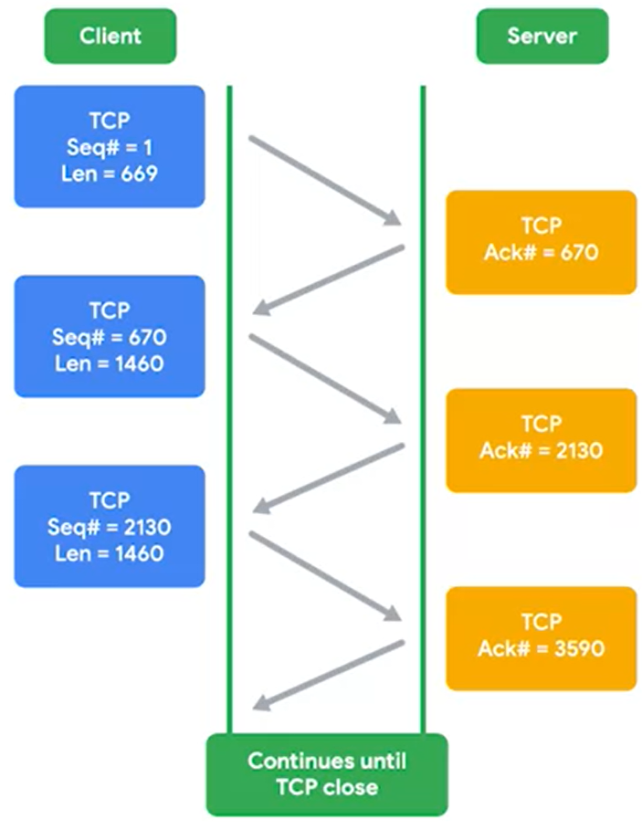

URG- this is short for Urgent. A 'true' value indicates that the segment is considered urgent and that the urgent pointer field has more data about this.
this feature of TCP is not common.
ACK- short for acknowledge. A 'true' value in this field means that the acknowledgment number field should be examined.
PSH- short for Push. This means, that the transmitting device wants the receiving device to push currently- buffered data to the application on the receiving end as soon as possible. In terms of TCP, it's used to send large chunks of data more efficiently. By keeping some amount of data in a buffer, TCP can deliver more meaningful chunks of data to the program waiting for it. But in some cases, you might be sending a very small amount of information, that you need the listening program to respond to immediately. This is what the push flag does.
RST- short for Reset. This means, that one of the sides in a TCP connection hasn't been able to properly recover from a series of missing or malformed segments. It's a way of saying "let's start over from scratch".
SYN- stands for Synchronize. It's used when first establishing a TCP connection and make sure the receiving end knows to examine the sequence number field.
FIN - short for Finish.
my ack number is the servers syn number + the TCP segment length
Each segment sent in either direction should be responded to by TCP segment with the ACK field set. This way, the other side always knows what has been received.

-------------------------------------------------------------------------------------------------------